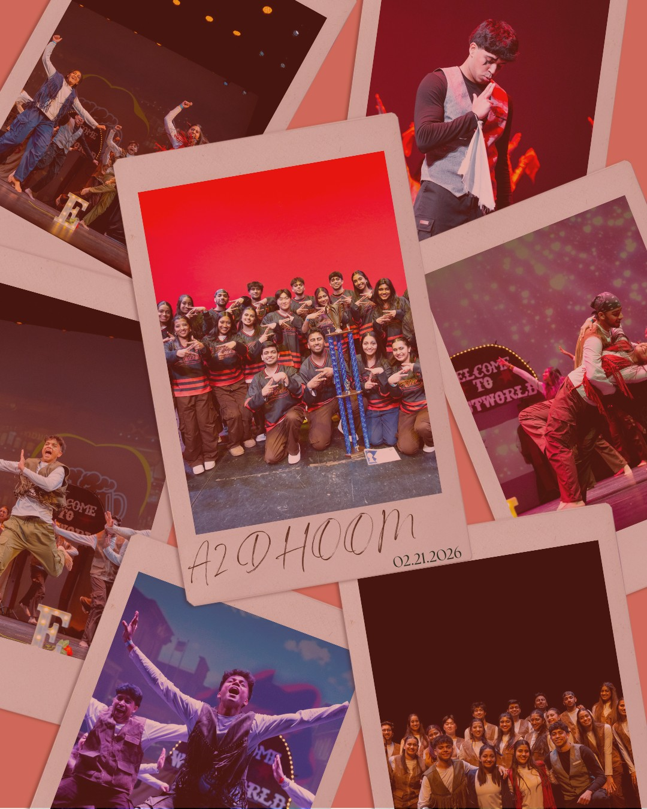

CHOREO-
GRAPHING
Zeher’s
DIGITAL
PRESENCE
from concept to publish
- Role
- Social Media Chair & Production Chair
- Dates
- October 2024–May 2026
- Tools
- Canva · TikTok · CapCut

Welcome to the Frontier
Zeher entered the season with a Westworld-inspired production and an underdog story already taking shape. We began ranked second-to-last in the A2 Dhoom competition standings and ended the season with a win. As Social Media Chair and Production Chair, I translated that journey into Zeher’s digital presence—developing concepts, designing promotional graphics, filming and editing short-form video, writing captions, and documenting the team’s momentum from recruitment through competition season.
Setting the Stage
Translating a seasonal production theme, a Western-inspired creative direction, and an underdog competition arc into one cohesive social presence meant working across very different registers—hype-building recruitment content, workshop and practice logistics, trend-driven TikTok, and competition storytelling—without losing a consistent identity. As Social Media Chair and Production Chair, that translation work was mine: concepting, designing, filming, writing, and publishing across every touchpoint the team had with its audience.
Brand Awareness
Used trend-driven concepts, team personality, and consistent publishing to expand Zeher's reach and recognition.
Recruitment & Community
Created timelines, workshop promotions, practice announcements, and team-culture content that made participation approachable and visible.
Branding the West
I translated Zeher's Westworld-era identity into visual assets for recruitment, practices, performances, fundraisers, team culture, and sponsored social events—adapting the frontier theme to different audiences while keeping the team recognizable.
In Motion
I developed each featured TikTok from start to finish—including the concept, filming, editing, caption writing, and publishing. Most videos were created to build brand awareness, showcase team personality, and keep Zeher visible beyond competitions and performances.
- 7,667 views
- 292 likes
- 9 comments
- 9 saves
- 37 shares
- ~4.5% visible engagement by views
This video was later archived for external reasons. Original performance data is shown here with permission to display the creative work.
Group doorway sequence
Outdoor campus montage
Stage performance
Rehearsal & group choreography
Building Momentum
Audience and engagement grew alongside the season's story.
The Payoff
Sponsorships and promoted events turned the season's momentum into real revenue for the team.
Zeher closed the season the way the story demanded: from second-to-last in the standings to a win at A2 Dhoom. That result belongs to the team who earned it on the floor—my role was to make sure the season's journey, from an underdog production theme to a competition win, was seen and felt by everyone watching from outside the team.